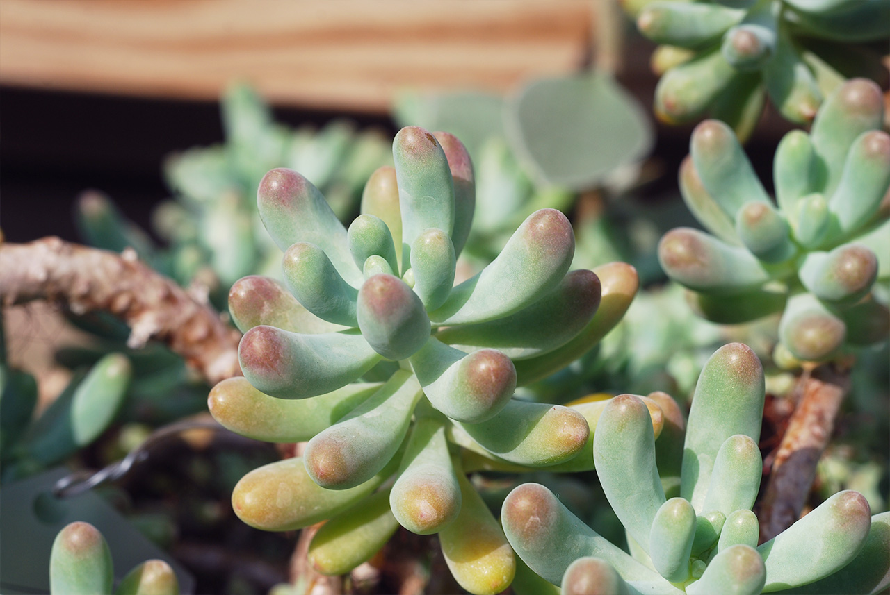
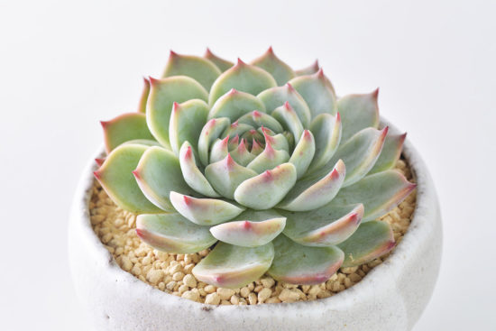

多肉的世界✨
多肉的奇幻世界✨
多肉植物由於其葉子由於能自行蓄水而顯得厚實肥滿，其中更有不少長久耐旱的品種，不須頻繁澆水、費心照料也能良好生長。
姬玉露
玉露一般指冰燈玉露，株型較小，葉子晶瑩剔透，猶如純潔的少女，可仔細近看，也可遠遠欣賞，因此，玉露有著不一般的花語：冰清玉潔(擷自肉肉網)
乙女心( Jelly bean plant )
乙女心又別稱「嬰兒手指」。「乙女」是日文的「少女」，用少女的心開始嚐到愛戀的滋味的粉紅來形容葉片。 乙女心的葉片覆蓋的白粉，會讓葉片更加粉嫩可愛，不要因此去觸碰葉片，以免在葉片上留下難看的指印，這可是所有葉片覆白粉的多肉植物大忌諱。(擷自農業知識入口網)

圖源:SUCCULAND
桃太郎
桃太郎最讓人愛不釋手的樣子就是他緊密的蓮座外型，葉面鋪上一層薄薄的細緻白粉，整體葉色淺粉綠，葉緣從底部漸層上來的粉紅外框、淡淡的柔柔的，到最頂端一抹討喜的紅尖點，每片葉子規律的生長著，光是這樣欣賞她美麗的樣貌，就足夠迷人了！(擷自SUCCULAND)

圖源:SUCCULAND